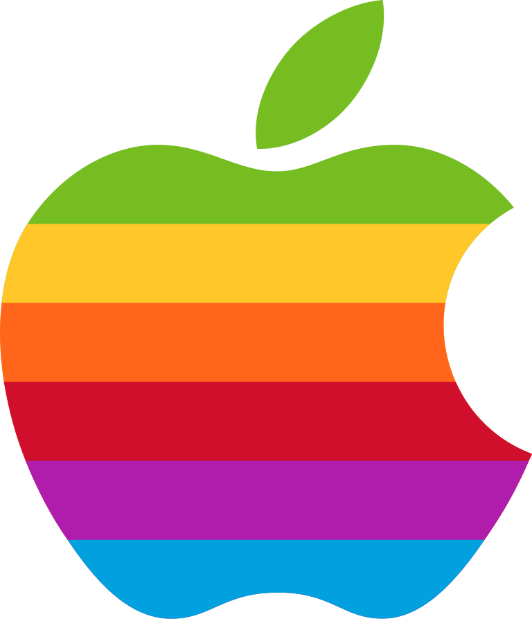

Historia do Logotipo Apple
A história do logotipo da Apple é uma das mais interessantes do mundo do design e da tecnologia cheia de simbolismo, evolução e genialidade visual. 🍏✨
A primeira versão
O primeiro logotipo (1976) – Isaac Newton e a maçã
O primeiro logotipo da Apple, criado por Ronald Wayne (um dos fundadores junto com Steve Jobs e Steve Wozniak), era muito diferente do que conhecemos hoje.
Descrição: mostrava Isaac Newton sentado debaixo de uma macieira, com uma maçã prestes a cair sobre sua cabeça uma referência à descoberta da gravidade. Frase inscrita: “Newton… A mind forever voyaging through strange seas of thought.”
Problema: o logotipo era complexo demais, difícil de reproduzir e nada moderno.
Pouco tempo depois, Steve Jobs achou que a marca precisava de algo mais simples e marcante.
O primeiro logotipo da Apple não se parecia em nada com o que vemos hoje. Era uma ilustração intrincada feita com caneta e tinta.
Representava Sir Isaac Newton sentado sob uma árvore, com uma maçã balançando precariamente acima da cabeça. Uma fita envolvia a moldura, com o nome "Apple Computer Co.
Surge um novo Logotipo O logotipo da maçã colorida (1977–1998)
Em 1977, o designer Rob Janoff criou o ícone da maçã mordida que se tornaria mundialmente famoso. Forma: uma maçã com uma mordida lateral para que as pessoas não a confundissem com uma cereja ou tomate.
Cores: o logotipo tinha listras coloridas (verde, amarelo, laranja, vermelho, roxo e azul). Significado: as cores representavam o espírito criativo e o Apple II, primeiro computador pessoal com tela colorida.
Mordida: também é um trocadilho visual com o termo inglês “byte” (unidade de informação em computação). Esse logotipo acompanhou a Apple durante o crescimento dos anos 80 e 90. 
A ideia da maçã como símbolo da Apple veio, principalmente, de Steve Jobs o cofundador da empresa.
Ele achou que o nome “Apple” era: “divertido, espirituoso e nada intimidante”, fácil de lembrar, e apareceria antes da Atari na lista telefônica (uma jogada esperta, já que a Atari era uma grande empresa de tecnologia na época).
Logotipo nos dias de Hoje
O logotipo da Apple nos dias de hoje é um dos mais icônicos, minimalistas e reconhecidos do mundo. Ele mantém o formato clássico da maçã mordida, criado em 1977, mas com um estilo moderno e adaptável às tendências de design atuais.O logotipo simboliza os valores centrais da Apple: Simplicidade → design limpo, direto e elegante. Inovação o formato se mantém, mas se adapta a novos contextos. Conhecimento e descoberta remetendo à maçã como símbolo do saber (Newton, Adão e Eva, etc).
Humanidade e acessibilidade o nome “Apple” e o logotipo são amigáveis, fáceis de lembrar e universais.
Quer saber mais?
“Byte” e “Bite” o trocadilho de tecnologia Outro motivo da mordida é um trocadilho inteligente: Em inglês, “bite” significa mordida. E soa igual a “byte”, unidade de informação usada em computadores. Assim, a maçã mordida simboliza a união entre o conhecimento (a maçã) e a tecnologia (o byte).
Então é isso! Espero que você tenha gostado do nosso artigo com essa curiosidade sobre o logotipo Apple e sua formosa maça.